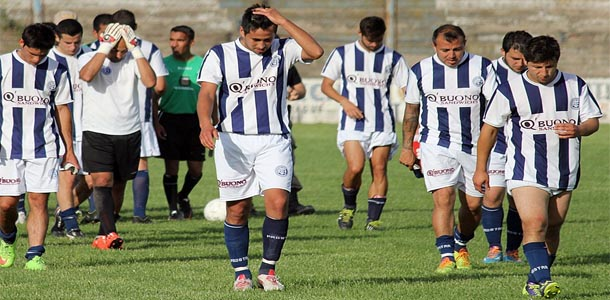
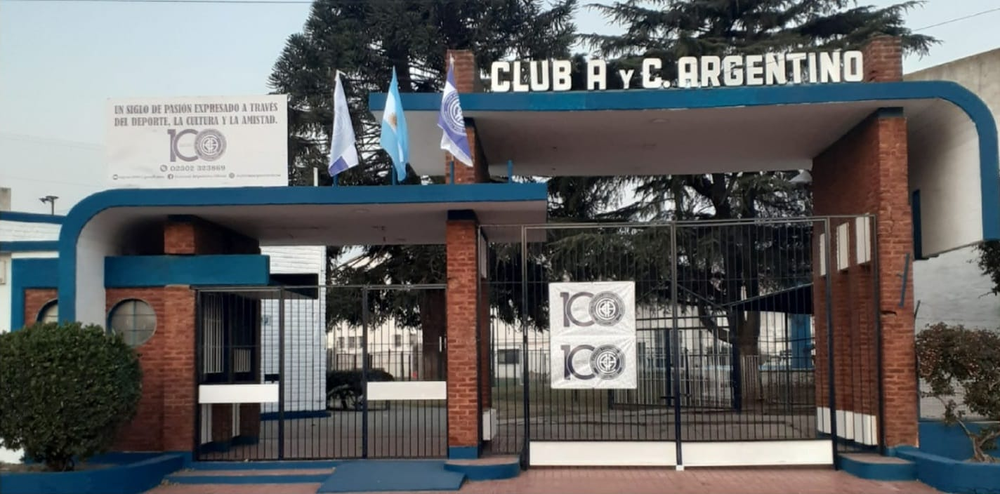

Club Atlético y Cultural ArgentinoEl Club Atlético y Cultural Argentino es una de las instituciones más tradicionales y arraigadas de General Pico. Conocido popularmente como "El Turco", el club se destaca no solo por su histórica participación en la Liga Pampeana de Fútbol, sino también por su inquebrantable función social y comunitaria dentro de la ciudad. Su clasico rival, Club Sportivo Independiente de General Pico. HistoriaFundado el 1 de agosto de 1920, el club nació como un espacio de encuentro y contención para los vecinos y jóvenes de la época. A lo largo de más de un siglo de vida, fue consolidando sus instalaciones y su imponente sede social. Sus equipos de fútbol hacen de local en el reconocido estadio bautizado como "El Volcán", un recinto emblemático del deporte pampeano. Disciplinas y actualidad deportivaAdemás de su histórico equipo de fútbol, la institución fomenta otras actividades esenciales:
Ubicación del estadio El Volcán
Volver al Inicio. |
Información institucional
 Equipo CAyCA
 Estadio El Volcán
|